크롬 설치방법
문서버젼(서버접속후)
Team Folder_퍼블리싱팀☆☆/00.Guide/환경설정/브라우저 부가기능 설치방법.pptx
3. 부가기능 설치
1) 애플리케이션 또는 오른쪽 상단 아이콘 클릭
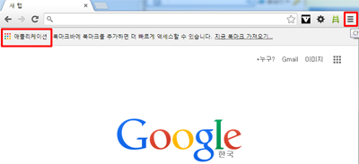
2) 스토어 클릭 또는 상단아이콘 메뉴클릭
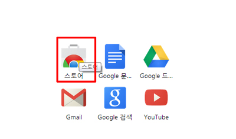
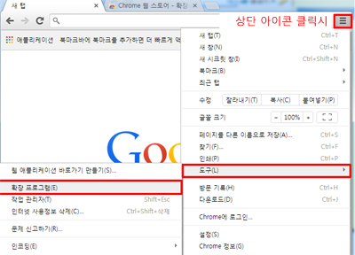
3) 확장프로그램 클릭
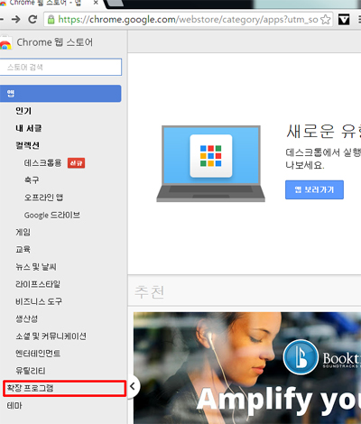
4) 개발자도구 클릭후 검색하기
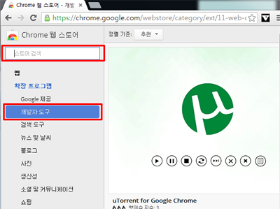
5) 무료버튼 클릭
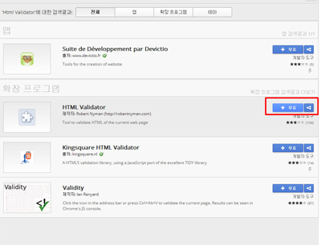
6) 상단에 추가 클릭
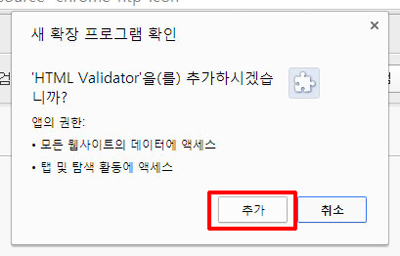
7) 설치확인
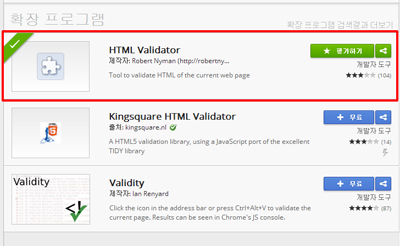
4.오류체크
-페이지 상단에 오류여부가 나타난다.
1) 오류표시
- 오류 없는 경우
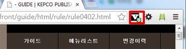
-
오류 있는 경우 - 상단 벨리데이터 클릭시 w3c로 연결하여 확인할수있다.
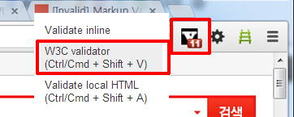
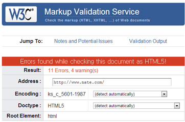
-
오류 있는 경우 - f12(개발자도구툴)로 확인할수있다
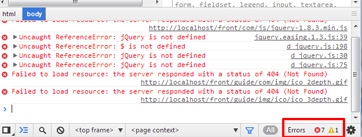